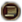

| 只适用于DLC变革之风激活时。 |

Austrian Revolution
奥地利革命[1]是  匈牙利的一个特有
匈牙利的一个特有  灾难，可发生于
灾难，可发生于  专制主义时代或
专制主义时代或  大革命时代。
大革命时代。
先决条件
 DLC
DLC  变革之风已开启
变革之风已开启
当前是  专制主义时代或
专制主义时代或  大革命时代
大革命时代
该国：
- 是君主制
- 主流文化不是奥地利
- 拥有至少 5 个省份满足以下至少一项：
- 文化是奥地利
- 是
 奥地利的核心
奥地利的核心
- 是独立国家或是朝贡国
- 是
 匈牙利
匈牙利 - 奥地利不存在
 奥地利-匈牙利不存在
奥地利-匈牙利不存在- 没有国家flag hun_austria_hungary_revolt_flag
- 存在
 贵族阶层
贵族阶层
如果这些先决条件被满足，月度进程就能开始。
| 月度进程开始，如果 | 月度进程停滞，如果 | ||||||||||||||||
|---|---|---|---|---|---|---|---|---|---|---|---|---|---|---|---|---|---|
|
对于该国下列至少一项为真：
|
开始
如果进度达到 100%，该灾难将会以下列事件开始：
该灾难进行时，国家获得：
- （未识别的字符串“manpower in accepted culture provinces”用于
{{Icon}}） -30% 相容文化省份人力修正  +0.15 每月自治度变化
+0.15 每月自治度变化
下列 
随机月度事件
没有事件被触发的权重是 600；本章节中4个月度事件触发的权重分别为 40、40、30和10。
ID
 奥地利人起义
奥地利人起义
ID
国内叛乱
触发条件
|
只触发于
{{{triggered only}}} |
绝不！
满足他们的要求。
| |
ID
弱小的皇帝
触发条件
|
只触发于
{{{triggered only}}} |
我们会让他们知道谁才是弱者。
| |
ID
同情革命
触发条件
|
只触发于
{{{triggered only}}} |
去他们的……
| |
结束条件
该灾难可通过决议“与奥地利妥协”直接结束，且同时触发下述“奥地利革命结束”事件。
此外，在通常情况下，该灾难可在满足下列条件时结束：
以下至少一项为真：
- 全部：
- 没有活跃的叛军
- 没有被叛军占领的省份
 稳定度至少为 1
稳定度至少为 1
- 奥地利存在
则失去以上提及的 效果 并触发下列事件：
ID
奥地利革命结束
- 国家flag hun_chose_compromise已设置
- 奥地利革命至此结束。双方都无法取得胜利，因此双方的领袖达成了妥协。最好的解决办法不是建立一个独立的奥地利国，也不是让匈牙利王室占据上风，而是建立奥匈帝国。奥地利贵族现在在[Root.GetName]享有更高的地位。
在以下情况下使用以下描述：
- 奥地利不存在
- 没有国家flag hun_chose_compromise
- 奥地利革命至此结束。虽然奥地利人进行了勇敢的抗争，[Root.GetName]王室仍然取得了胜利。奥地利的命运现在由他们来掌控。
在以下情况下使用以下描述：
- 奥地利存在
- 奥地利革命至此结束。奥地利革命者在这场冲突中获得了胜利。尽管我们努力遏制他们，他们还是成功建立了一个独立的奥地利国。世界上的大部分人都视此为对[Root.GetName]的羞辱。
触发条件
|
只触发于
|
立即生效
| |
妥协将会带来和平。
胜利属于[Root.Monarch.GetName]王冠。
我们一定会回来的！
或许我们可以用自己的方式达成妥协……
| |
选择任意选项后的效果
| |
脚注
- ↑ 见于：/Europa Universalis IV/common/disasters/german_revolution.txt；事件位于：/Europa Universalis IV/events/German_Revolution_Disaster_Events.txt。